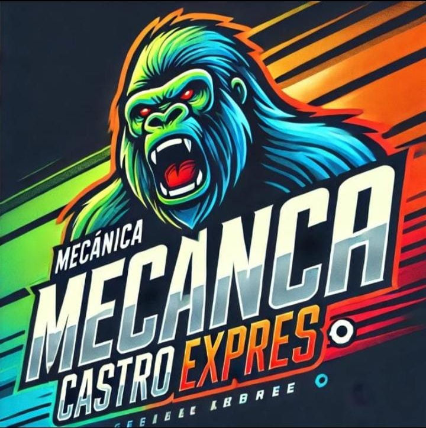
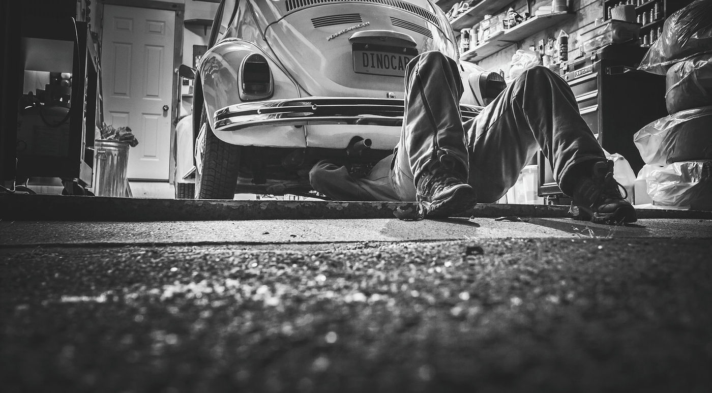

Mantención, reparación y diagnóstico de fallas para todo tipo de vehículos, con atención personalizada y precios claros.
Reserva tu horaDesde cambios de aceite hasta reparaciones de motor y transmisión.
Equipos de diagnóstico para ubicar la avería rápido.
Repuestos y accesorios compatibles con tu vehículo.
Mecánica Castro es una empresa familiar de mecánica automotriz. Nos comprometemos con la seguridad y el rendimiento de tu vehículo, y te explicamos qué tiene antes de trabajar en él.

Entendemos lo que necesitas y te damos una solución a medida para tu auto.
Precios competitivos sin bajar la calidad del trabajo ni de los productos.
Profesionales calificados comprometidos con tu satisfacción.
Bernardo O'Higgins 329, Puente Alto.